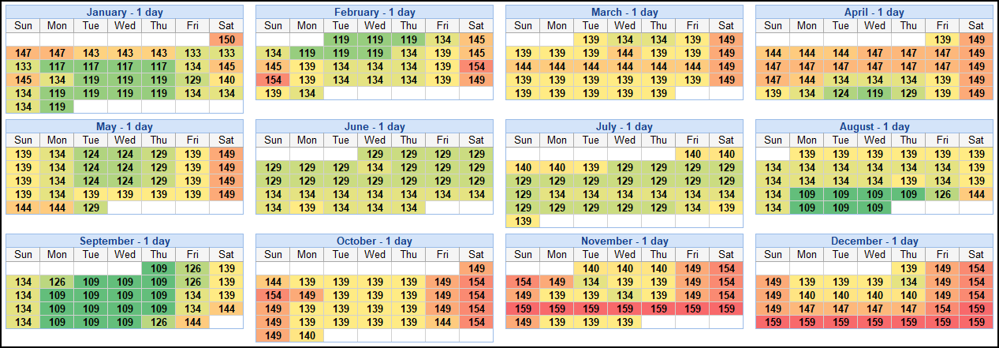

In 1971, the swampy everglades of Kisame Flordia transformed into what would start as a family park and become a power hungry conglomerate. Disney World opened their door on Oct. 1st, 1971. At first they only had one park, the Magic Kindom. This park only included a few attrations such as the Mad Tea Party, Jungle Cruise, It's a Small World, The Hall of Presidents, and the monorail system. During this time entry into the park costed no more than a few dollars. Flash forward to 2022 and the price of entery has grown by a substantial amount.
The Present

Stepping through the magical doors of Disney World is not what it once was. Disney has expanded beyond even what Walt himself imagined for the park. Since its opening, there has been an addition of three major parks. Through the last decade, there have been many additions and renovations. If you decide to step into the beautiful world of Pandora, located in the depth of Animal Kingdom, it is as if you have immersed yourself inside the mystical film of Avitar. Another addition was Galexy's Edge in Hollywood Studios. This attraction is 14 acres, as it transports guests and immerses them in the world of Batuu. These additions have made Disney waht it is, a powerhouse.

However because of this, and many other reasons, they have raised the price of tickets by an exorbitant amount. The rise in ticket prices has had a devastating effect on American families. The most "magical place on earth" is now one of the most expensive places.
Pricing
Disney World Recently celebrated its 50th anniversary, and the years have been good for the theme park. According to the New York Post, ticket prices have increased by nearly 4,000%. The ticket price is only the tip of the iceberg as fast passes, park hoppers, hotels, and meals also contribute to an empty wallet. Sadly, many Americans who grew up going to Disney can not afford to go back, especially if they have children.
Why the Rise in Price?
There are many reasons why Disney World has raised its prices. Recently, the country has not been in the best shape, economically, with much inflation. Covid also had an impact that is still lingering. Disney raised their prices after they shut down in mid-March 20220 due to COVID-19. However, when they reopened the park in July, they raised the prices due to revenue loss. However, since the raising prices started in the early 70s, it is safe to say Disney's ticket price is more than the aftermath of inflation. A study by the Wall Street Journal found that Disney World raised ticket prices at double the rate of inflation in the 2010s.
The reasons, besides inflation, call on Disney's strengths. Disney is a monopoly. The editor of Theme Park Insider once stated, "Disney does not like to lose-not just lose, Disney doesn't even like to compete. Disney wants to dominate its competition." Since its opening Disney has remodeled the park many times. Hollywood Studios, what used to be called MGM, added attractions such as Galaxy's Edge and Toy Story Land. The beautiful world of Pandora, located at Animal Kingdom, also came at no small price. These attractions are built to crush competition such as Universal Studios. However, it is another reason for price increases.
Disney uses "tiered pricing models." Since they have times of the year when it is busier than others, they break down the tickets into different categories: "value, peak time, and regular." The prices for each category vary, with "peak time" being the most expensive.
Over the years Disney has been called out for trying to attract wealthier consumers. According to Reader's Digest, "When Disney World opened, staying at the Bora Bora Bungalows cost $29 per night. Now it can cost as much as $3,400!"

@piechartpirate Walt Disney World ticket price increase since 1971 #disney #disneyworld #inflation #datatok ♬ Disney-style fanfare-style BGM - harryfaoki
Who does this Effect?
A survey by Insider, on May 21st, asked 1.086 people if they would visit the theme park that year. Around 26% of responses stated they would "probably not attend," while 20% said they "definitely would not attend." Under a deeper analysis, they found that more than 50% of respondents said that Disney World was too expensive to warrant a trip. Among these respondents, it seemed that price was a concern for families earning less than $100,000 a year. The lack of income and the rising price of tickets is a problem because majority of Americans can not afford it.
Unfortunately, do to the high prices, a lot of American families can not afford a trip to Disney World. The avrage U.S. income is $31,133. If you factor in other expenses such as mortgage, taxes, gas, and food a trip to Disney World seems like a distant dream. As stated in the Washington Post, Scott Smith, a former Disney cast member and a professor of hospitality at USC said, "They've priced middle-class families out." Disney tickets are over $150. A trip, for a family of four, would cost thousands which many families can not afford.